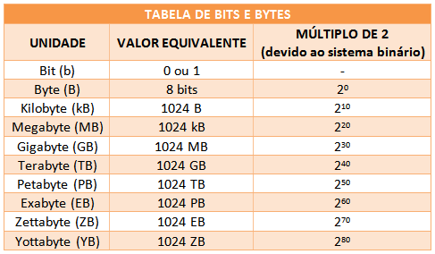

Bps (bits por segundo): Representa a velocidade de transferência de bits em uma rede ou conexão. Por exemplo, 1 bps significa que 1 bit é transmitido a cada segundo.
Kbps (quilobits por segundo): Equivale a 1.000 bits por segundo. É comumente usado para medir velocidades de conexões de internet e transferência de dados.
Mbps (megabits por segundo): Representa 1.000.000 de bits por segundo. É a unidade mais usada para descrever velocidades de internet de alta velocidade, como conexões de banda larga.
Gbps (gigabits por segundo): Corresponde a 1.000 Mbps ou 1 bilhão de bits por segundo. É usado para redes de alta capacidade, como fibra óptica e data centers.
Tbps (terabits por segundo): Igual a 1.000 Gbps ou 1 trilhão de bits por segundo. Essa taxa é encontrada em infraestruturas de internet de nível empresarial e supercomputadores.
